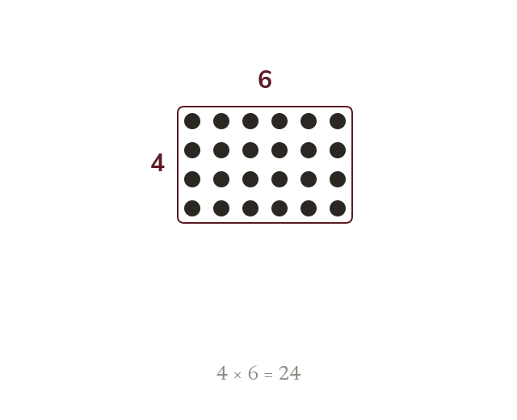
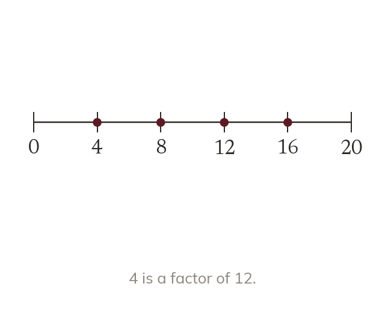
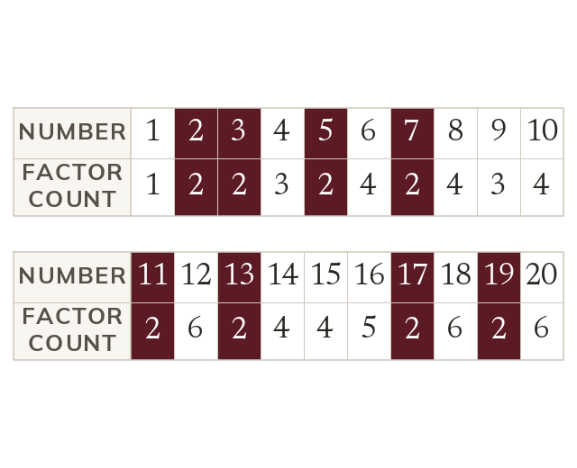
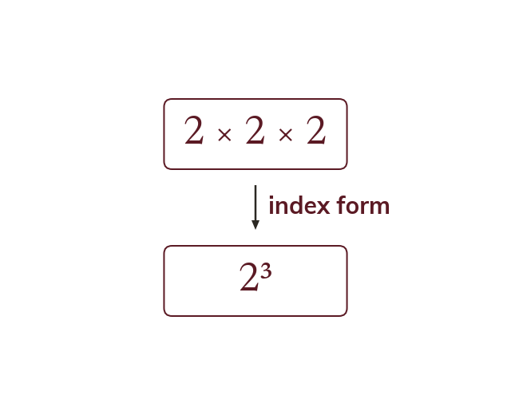

Factors
A factor of a number divides into it exactly, with no remainder. Factors come in pairs that multiply to give the original number.
Every whole number is built from smaller numbers multiplying together - and knowing exactly which ones is the key to simplifying fractions, sharing things equally, and even keeping computer passwords secure. Today you'll learn to spot the building blocks of any number: its factors, its multiples, and the special "unbreakable" numbers called primes that everything else is built from.
Work down the page at your own pace. Write every answer in your book first, then click to check it.
Read each card, then follow the worked examples one step at a time.

A factor of a number divides into it exactly, with no remainder. Factors come in pairs that multiply to give the original number.

A multiple is a number times a whole number. Multiples are the reverse of factors. Every number is a multiple of each of its factors.
Pick an answer. If it's wrong, the feedback tells you which mistake it was.
Read each card, then follow the worked examples one step at a time.

A prime number has exactly two factors: 1 and itself. 1 has only one factor: it is neither prime nor composite. 2 is the only even prime.

A power writes repeated multiplication compactly: 2 × 2 × 2 = 2³. The raised number counts the 2s multiplied together.
Pick an answer. If it's wrong, the feedback tells you which mistake it was.
Finished? Next lesson: 7.1.2 Divisibility Rules.
Log in, then search for a code to practise that skill.
Videos, worksheets and more on each part of this lesson.